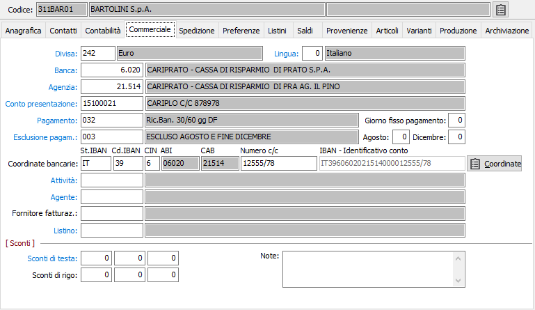

Commerciale

CODICE DIVISA: codice alfanumerico di 3 caratteri presente in tabella Divise per indicare la divisa con la quale viene trattato il fornitore. Viene proposto automaticamente in fase di emissione documenti. Sul campo sono attive le funzioni di ricerca (F9) e manutenzione (CTRL+W) sulla tabella stessa.
LINGUA: codice numerico di un carattere, presente nella tabella Lingue, per definire la lingua da utilizzare nei documenti prodotti per il fornitore. Se il fornitore fa parte di un mastro Fornitori Italia, il valore del campo viene posto automaticamente a 0 (italiano) e non ne viene permessa la variazione. Sul campo sono attive le funzioni di ricerca (F9) e manutenzione (CTRL+W) sulla tabella stessa.
BANCA: nel caso in cui il fornitore richieda un pagamento a mezzo RB, inserire il codice della banca di appoggio dell’utente; nel caso in cui richieda invece un pagamento a mezzo bonifico, inserire il codice della banca del fornitore stesso. Tale codice verrà proposto automaticamente in fase di emissione documenti. Sul campo sono attive le funzioni di ricerca (F9) e manutenzione (CTRL+W) sulla tabella stessa.
AGENZIA: inserire il codice dell'agenzia della banca di appoggio di cui al campo precedente. Tale codice verrà proposto automaticamente in fase di emissione documenti. Sul campo sono attive le funzioni di ricerca (F9) e manutenzione (CTRL+W) sulla tabella stessa.
CONTO PRESENTAZIONE: contiene il codice del conto corrente dell'utente sulla quale verranno appoggiati gli effetti passivi o a debito della quale verranno emessi i bonifici per il pagamento del fornitore in esame. L'informazione non è obbligatoria. Sul campo sono attive le funzioni di ricerca (F9) e manutenzione (CTRL+W) sulla tabella stessa.
PAGAMENTO: inserire il codice del pagamento previsto per il fornitore, che verrà proposto automaticamente in fase di emissione documenti o di registrazione fatture. Sul campo sono attive le funzioni di ricerca (F9) e manutenzione (CTRL+W) sulla tabella stessa.
ESCLUSIONE PAGAMENTO: inserire, se necessario, il codice del tipo di esclusione accordata per i pagamenti. Sul campo sono attive le funzioni di ricerca (F9) e manutenzione (CTRL+W) sulla tabella stessa.
AGOSTO: se valorizzato esclude il mese di agosto e indica il giorno del mese di settembre valido per il pagamento.
DICEMBRE: se valorizzato esclude gli ultimi 15 giorni del mese di dicembre e indica il giorno del mese di gennaio valido per il pagamento.
COORDINATE BANCARIE
STATO IBAN: codice dello stato assegnato dalla banca.
CHECKDIGIT IBAN: codice di controllo assegnato dalla banca.
ABI: codice ABI della banca specificata sopra. In sola visualizzazione.
CAB: codice CAB dell'agenzia bancaria specificata sopra. In sola visualizzazione.
NUMERO C/C: campo alfanumerico di 12 caratteri per indicare il numero di conto corrente del fornitore riferito alla banca e all’agenzia di cui ai campi precedenti.
CIN: codice di controllo assegnato dalla banca.
Il pulsante Coordinate attiva la finestra di gestione delle coordinate bancarie multiple.
Se non sono presenti tutti gli elementi delle coordinate bancarie è possibile inserire direttamente l'IBAN nell'apposito campo, nel caso di un fornitore che ha come nazione un paese non in area SEPA (flag "Paese area SEPA" nell'anagrafica della nazione spento), oppure l'identificativo del conto che sarà riportato nel flusso XML.
CODICE ATTIVITÀ: inserire il codice dell'attività del fornitore. Sul campo sono attive le funzioni di ricerca (F9) e manutenzione (CTRL+W) sulla tabella stessa.
CODICE AGENTE: inserire il codice dell'agente relativo al fornitore. Sul campo sono attive le funzioni di ricerca (F9) e manutenzione (CTRL+W) sulla tabella stessa.
FORNITORE FATTURAZIONE: codice che indica il fornitore di fatturazione preferenziale da proporre in fase di inserimento nuovi documenti. Sul campo sono attive le funzioni di ricerca (F9) sulla tabella stessa.
CODICE LISTINO: inserire l'eventuale codice del listino del fornitore. Tale codice verrà proposto automaticamente in fase di acquisizione ed emissione documenti. Sul campo sono attive le funzioni di ricerca (F9) e manutenzione (CTRL+W) sulla tabella stessa.
SCONTI DI TESTA: in base a quanto inserito in configurazione, possono comparire fino a 5 sconti. Inserire tali percentuali di sconto/maggiorazione in questi campi. Il segno è determinato da quello che si è inserito in configurazione sul campo "tipo trattamento sconti". In fase di immissione ordine, Ddt o fattura, le percentuali sono proposte automaticamente come sconti/maggiorazioni di testa.
SCONTI DI RIGO: in base a quanto inserito in configurazione, possono comparire fino a 5 sconti. Inserire tali percentuali di sconto/maggiorazione in questi campi. Il segno è determinato da quello che si è inserito in configurazione sul campo "tipo trattamento sconti". In fase di immissione ordine, Ddt o fattura, le percentuali sono proposte automaticamente come sconti/maggiorazioni di rigo.
NOTE: campo note per descrivere annotazioni di tipo commerciale.